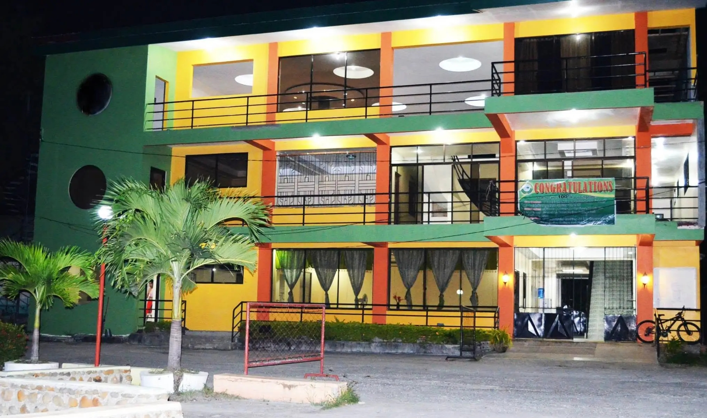
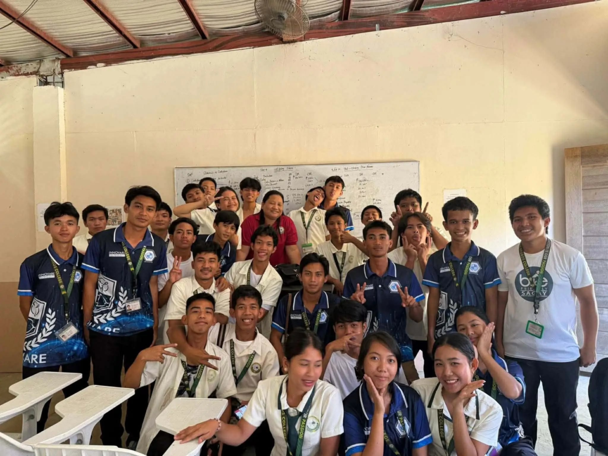

Bachelor of Science in Computer Science
Explore Technology, Innovation and Programming
Computer Science is the study of computers, software, and technology. It teaches students how to create programs, websites, and applications.
Students also learn how to solve problems using computers and technology. Computer Science helps students develop useful skills for future jobs in the technology industry.

COMPUTER SCIENCE VIDEO
If you are interested in the BSCS program, you may contact North Negros College for more information.
Program: Bachelor of Science in Computer Science
School: North Negros College
LINKS: NorthNegrosCollege & Page of BSCS 2-B